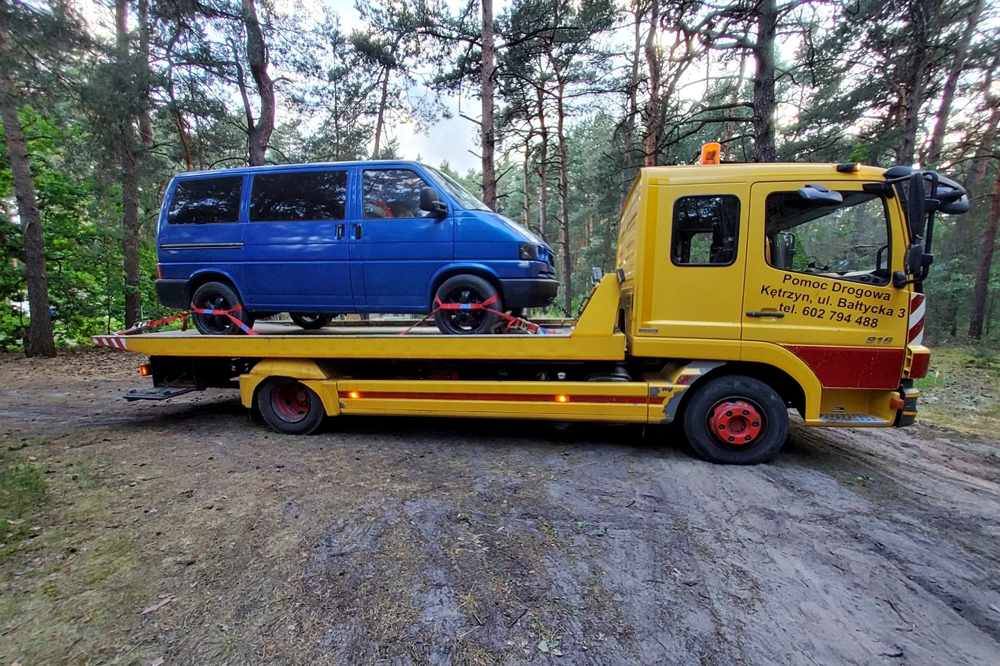

Jetzt muss auch der Blaue in die Werkstatt — 3. und 5. Gang sind weg

Nach dem Roten dachte ich, ich hätte mein Pannen-Kontingent fürs Erste aufgebraucht. Der Blaue hatte offenbar andere Pläne. Diesmal ist es das Getriebe: Der dritte und der fünfte Gang funktionieren nicht mehr. Also heißt es wieder Werkstatt statt Weiterreise.
Zwei Gänge fehlen — aber die Ursache ist noch offen
Wenn einzelne Gänge ausfallen, liegt die Versuchung nahe, sofort im Internet eine Diagnose zu suchen. Schaltgestänge, Einstellung, Lagerung oder etwas im Getriebe selbst — theoretisch kommt Verschiedenes infrage. Solange das Fahrzeug aber nicht fachgerecht untersucht ist, wäre jede genaue Behauptung nur geraten. Und genau das möchte ich nicht.
Was ich sicher sagen kann: Der dritte und fünfte Gang sind nicht nutzbar. Damit ist normales und verlässliches Fahren für mich keine Option. Der Blaue kam auf den Abschleppwagen und muss untersucht werden.
Das alte Gefühl ist sofort wieder da
Ein älterer T4 ist mehr als Romantik und schöne Stellplätze. Er verlangt Aufmerksamkeit, Wartung und manchmal sehr viel Geduld. Als ich den Blauen auf dem Abschlepper sah, war die Erinnerung an den Roten sofort da. Natürlich weiß ich, dass ein Getriebeschaden nicht automatisch das Ende des Fahrzeugs bedeutet. Trotzdem sitzt die Angst nach solchen Erfahrungen tief.
Warum ich diese Seite des Vanlife zeige
Auf Instagram sieht man häufig das fertige Lager am See. Der Abschleppwagen passt weniger gut in die Traumkulisse, gehört aber genauso dazu. Wer mit einem alten Bus unterwegs ist, muss nicht alles selbst reparieren können. Man sollte aber merken, wann Weiterfahren keine gute Idee mehr ist, und ehrlich mit dem Zustand des Fahrzeugs umgehen.
Jetzt warte ich auf die Diagnose. Ich hoffe, dass der Blaue bald wieder alle Gänge findet. Und wenn nicht, wird auch das Teil dieser Geschichte — ungeschönt, ohne erfundene Heldentat und mit dem Werkzeug dort, wo es hingehört.
Bis bald und immer gute Fahrt,
eure Tussy 💛